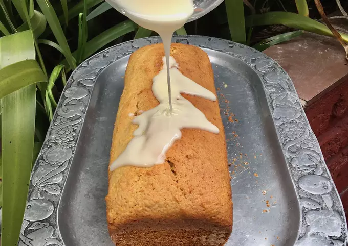

- Ingredientes:
- 3/4 taza azúcar impalpable
- C/n jugo de naranja
- Para que les quede un glasé blanco y sólido como el mío, en un bowl deben echar el azúcar y de a poco ir tirando gotas de jugo de naranja e ir revolviendo. A medida que se va volviendo más líquido, deciden si agregar o no más jugo dependiendo de qué consistencia les guste.
- Listo para agregarle a cualquier cosa dulce! Súper rico queda!